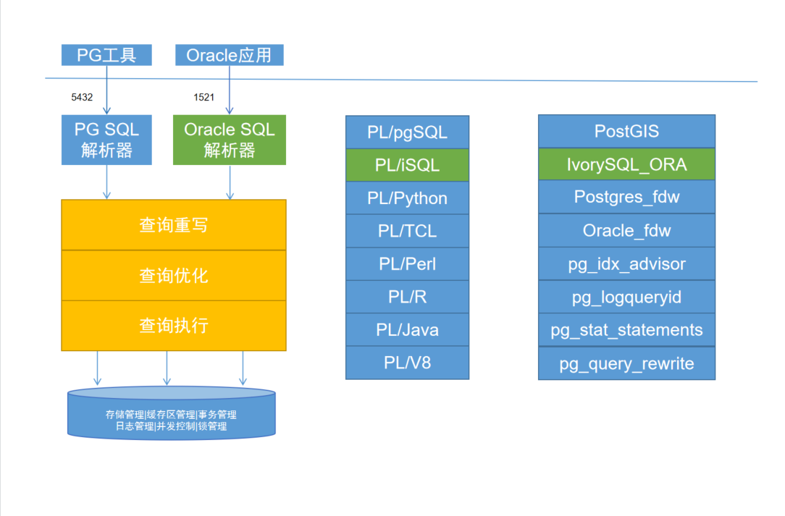

ivorysql框架设计 1. 目的 为了对原有的postgres改动最小的前提下，实现对oracle兼容。我们需要实现双parser、双端口、模式PLPGSQL实现PL\iSQL的框架。实现流程图如下：  2. 功能 2.1. 双端口设计 保持了ivorysql 5432端口兼容原有postgres情况，因此 Ivorysql采用另一个独立的端口登录，默认为1521。从该端口登录，默认采用oracle兼容模式。如果需要从5432端口登录且还要进入兼容模式，则需要通过compatible_mode参数进行设置; 2.2. parser模块设计 为了将oracle语法与postgres语法间的相互干扰降到最低，因此新增parser模块，用于处理oracle相关的语法; 2.3. 新增PL\iSQL过程语言 同样为了减少oracle兼容与postgres语法不同而导致测试用例冲突得情况，因此单独设计了一套oracle专用的测试用例。该套测试用例由postgres原有测试框架拷贝修改而来; 欢迎 大小写转换